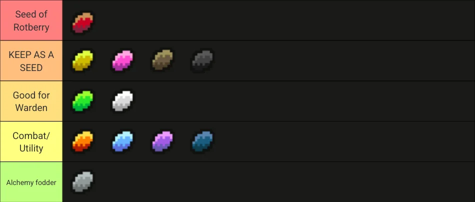

<2024-08-05 সোম>
Only eat if you need health and are starving. 
You use plants on enemies by throwing the seed under the enemy, then throwing an item (not a ranged weapon that sticks, though) at that enemy as they stand there. This will trigger the plant immediately.
| Seed | Potion | Ability |
|---|---|---|
| Sungrass | Healing | Heal |
| Firebloom | Liquid Flame | Fire |
| Icecap | Frost | Freeze, Frozen meat |
| Starflower | Experience | Bland fruit to get exp |
| Earthroot | Paralytic Gas | Defense, goo fight |
| Dreamfoil | Purity | Sleep |
| Sorrowmoss | Toxic Gas | Removes -ve effects (bleeding, poison |
| Fadeleaf | Invisibility | Teleports, good for running away |
| Stormvine | Levitation | Vertigo |
| Swiftthistle | Haste | Speed. Good for DM-300, Tengu |
They can also make exotic potions and elixirs. They can be used to tip darts with ice,frost to fight elementals.
scroll of identity potion of healing scroll of rage
Scroll of Identity Scroll of Invisibility Scroll of Magic Mapping
Scroll of Identity Potion of Strength Scroll of Mirror Image
Why the Warden with rotberry seed is OP PLEASE! HELP! I'M HOPELESSLY ADDICTED TO PLAYING WARDEN! Come back to SHOP